IELTS & C1 Syntax Workbench
Ditch memorised thesaurus padding and practise the five C1 structural shifts examiners credit at Band 7.5+.
Interactive IELTS and Cambridge workbenches, grammar games, and bespoke playable lessons built from 19 years of teaching (15 at Belfast Met).
Jump straight into a flagship workbench, a new C2 studio, a bespoke 1-to-1 sample, or a story world.
Ditch memorised thesaurus padding and practise the five C1 structural shifts examiners credit at Band 7.5+.
40-item transformation trainer enforcing the 4-Step Strike Out the Echoes method and strict 3 to 6 word rules.
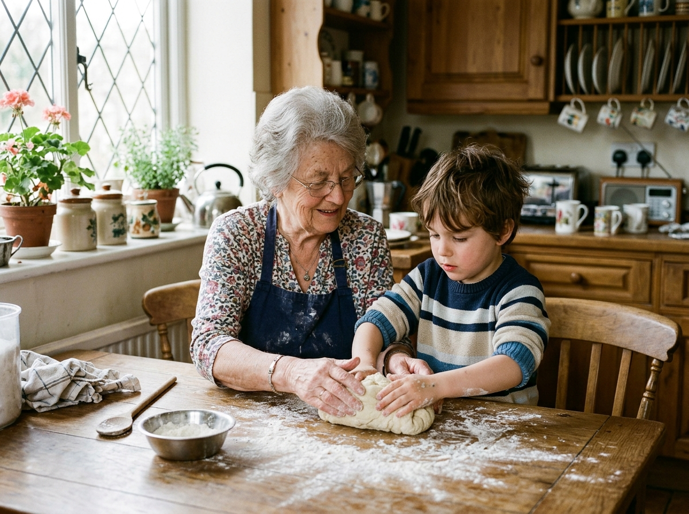
Interactive walkthrough of all three C2 Speaking parts with six real Part 2 photos, live timers, and 45-second partner models.
Split-flap departure board, 10 world destinations, debate verdict stamps, and a 16-gate travel speaking roulette.
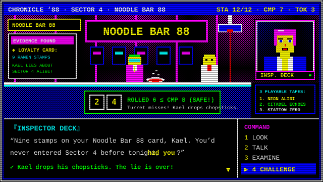
Interrogate suspects, spot broken alibis, and roll the dice under pressure across five retro case tapes.
Explore an interactive 3D Aegean island inspired by John Fowles's The Magus and solve C1/C2 literary puzzles.
Rewrite without "People": "People widely believe that urban green spaces reduce stress." -> "Urban green spaces _______ reduce stress."
Prefer reading? Browse annotated Band 8.5 and C2 essays plus six empirical classroom studies from my teaching notes.
Paste a paragraph into the live cadence scanner or order 48h written red-pen feedback (£29) directly from my desk.
Academic Reading T/F/NG and Matching Headings, static Task 1 data overviews, Task 2 sentence craft, two-minute error sweeps, and Part 2/3 speaking studios.

Click the proving sentence before stamping TRUE, FALSE, or NOT GIVEN across 12 live items plus a 5-paragraph Matching Headings clinic.
Six publication-grade SVG charts, tables, and mixed visuals with an interactive Overview Surgeon and live raw-number trap detector.
Master the five C1 sentence structures (clefts, passive reporting, participle clauses, inversions) that break the Band 6.5 deadlock.
Spot all five Academic Task 2 prompts in 30 seconds and assemble Band 8.0+ body paragraphs interactively.
Replace dramatic cliches with precise trend verbs, map redevelopment passives, and concise overview clauses.

60-second margin notepad, 120-second 3-Act Story Arc clock, and 12 cue cards paired with British audio models.
Train your final two-minute check across 25 recurring agreement, article, preposition, and comma-splice slips.
Extend abstract Part 3 answers naturally using the A.R.E.A. frame with 22 spoken Band 8.0+ audio comparisons.

Compare your spoken rhythm against 24 British clips covering weak forms, past modals, elision, and stress timing.
Strip out the big words to spot robotic essay openings and repetitive sentence frames before exam day.
Paper 1 Part 2 Open Cloze, Part 3 and Part 4 drills, Speaking Parts 2 and 3 photo and mind-map studio, timed Writing Part 1/2 desks, and L1 error scrubbers.

3-photo Part 2 comparison gallery with zoom lightbox, 60-second speculation ring clock, 12-chip word-drop tracker, and interactive Part 3 mind-map.
Built on my 91.7% function-word finding: 16 two-step slot diagnoses plus a full 8-gap C1/C2 passage with live 1-word guard.
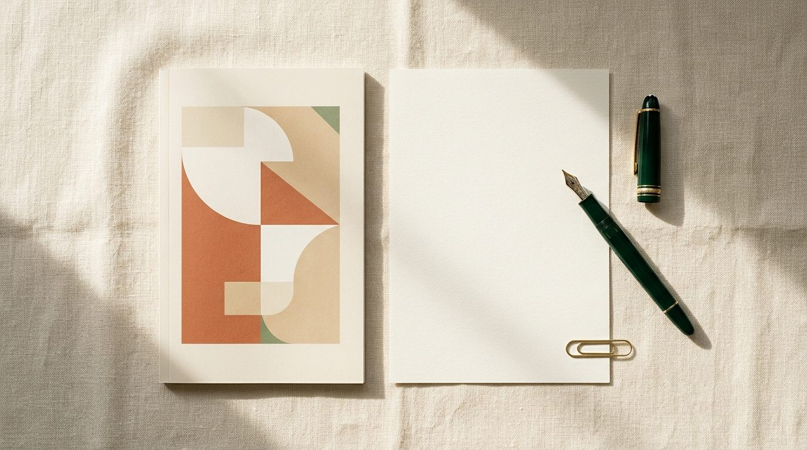
Side-by-side register dial, 10-item tone-bleed spotter, two Band 5 models, and a live 220 to 260 word draft pad with slip radar.
40-item trainer enforcing the 4-Step Strike Out the Echoes method and strict 3 to 6 word rules.
Build a 220 to 260 word CAE essay sentence by sentence against a 5-minute clock with six annotated models.
Side-by-side register rules, section headings, past-vs-future verb framing, and six interactive C1 rewrites.
Diagnose noun, adjective, adverb, and negative-prefix shifts across 20 authentic C1 stem transformations.

Separate genuine grammar slips from natural C1 phrasing under a brisk 90-second editing timer.
Track every high-frequency transformation family and test yourself on a 35-item live pattern quiz.
Paste a paragraph and test it through Mandarin, Slavic, Romance, or German L1 filters to catch fossilised slips.
Hear common C1 slips out loud and repair tense and if-would traps under a 15-second speaking clock.
Stepping up from B2 First (FCE)? Browse B2 & C1 reading guides on Study Guides
Part 1 lexical precision, official 3 to 8 word Part 4 transformations, Part 6 Gapped Text cohesion, CPE Speaking Studio, Writing Parts 1 and 2, and classic Victorian literature.
Interactive walkthrough of all 3 CPE Speaking parts with 6 real Part 2 photos, timers, and 45-second partner evaluation models.
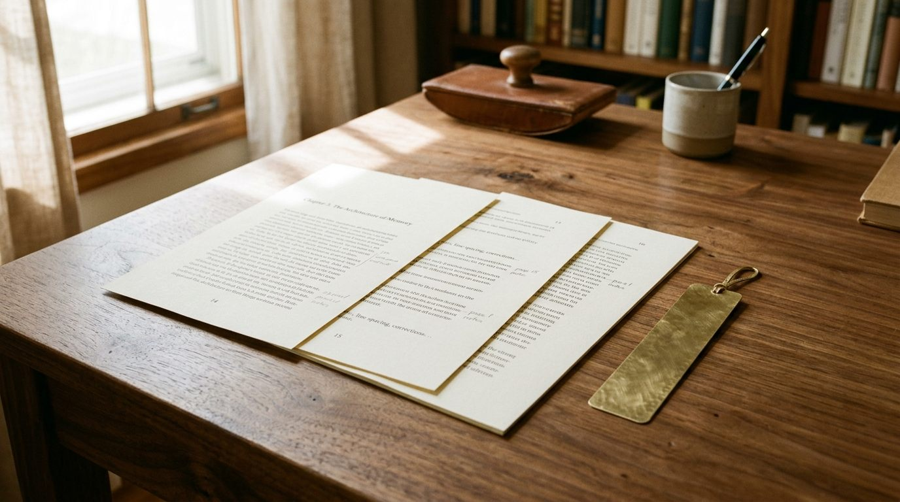
Full 7-gap split-pane reconstruction desk (8 cards A to H) with colour-coded Cohesion Anchor Illumination and 10-second decoy autopsy drills.
Two contrasting source texts, 4-point coverage tracker, live 3-word lifted-phrase detector, and annotated Band 5/5 model.

Same-topic Report, Review, Article, and Letter switcher, 10-item tone-bleed clinic, two Band 5 models, and live 280 to 320 word draft pad.
8-gap near-synonym autopsy, 10 blended-idiom and false-friend repairs, and 8 C2 analytical verb upgrades.
87-item past-paper audit of the top 10 C2 transformation families with 20 split-mark drills.
Evaluate corporate screening arguments and practise C2 causative and impersonal passive frames.
Control Seldom, Little, Not until, and No sooner... than without losing subject-auxiliary order under exam pressure.
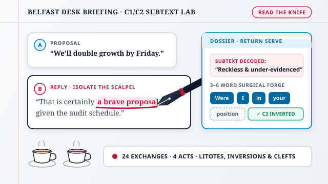
Spot veiled British understatement, decode diplomatic stonewalling, and build measured C1/C2 responses.
Interactive Open Cloze slot classifier, double-shift Part 3 word formation check, and B2-to-C2 Part 4 ladder.
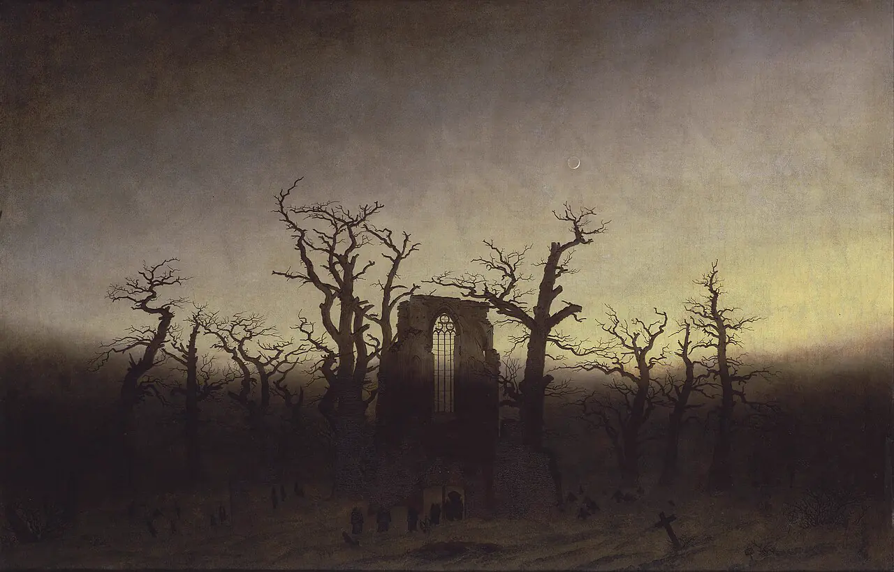
Playable detective tapes, 3D literary islands, syntax dungeons, and anonymised 1-to-1 lessons built around real students' hobbies and goals.
Question suspects, spot broken alibis, and solve grammar puzzles under pressure across five retro detective episodes.
Walk a 3D Aegean peninsula, examine cryptic villa notes, and unlock rooms with high-level grammar and inference.
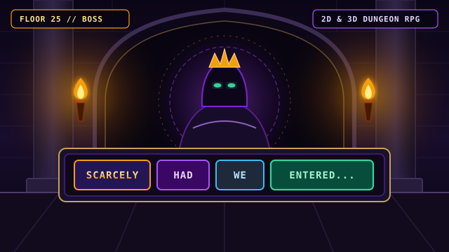
Assemble sentences from word-runes across 20 B2-to-C2 dungeon floors, daily 5-question seeds, or the 3D WebGL vault.
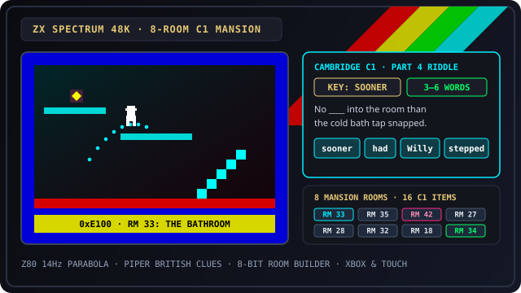
Classic ZX Spectrum style 8-room platformer powered by C1 grammar keys, plus a built-in custom room editor.
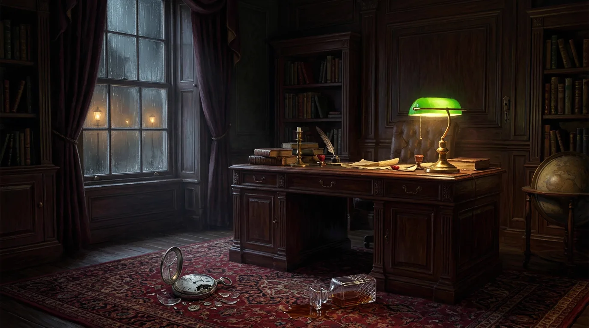
Linen Hall Street murder interrogation with 19 voiced British clips and C1 cross-examination.
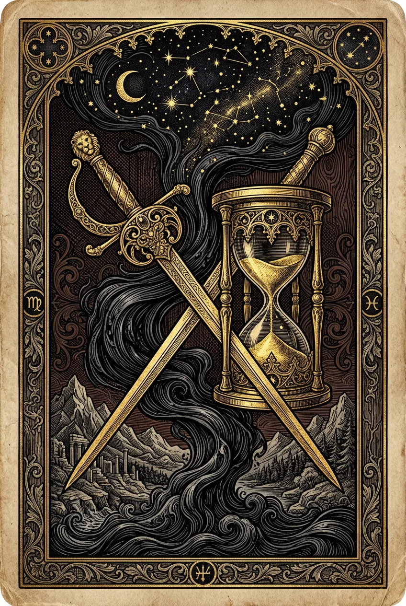
Victorian baize debate table with 12 illustrated Cambridge rhetorical suits, 12 audio models, and 8 Part 4 trials.
Real interactive lessons built around individual students' hobbies, careers, and targets (anonymised public samples).
Split-flap departure board, 10 world destinations, verdict stamps, and 16-gate speaking roulette.
9 cyber-spy missions with HQ audio log, 3-suspect glow-ink whodunnit, and live agent codename.
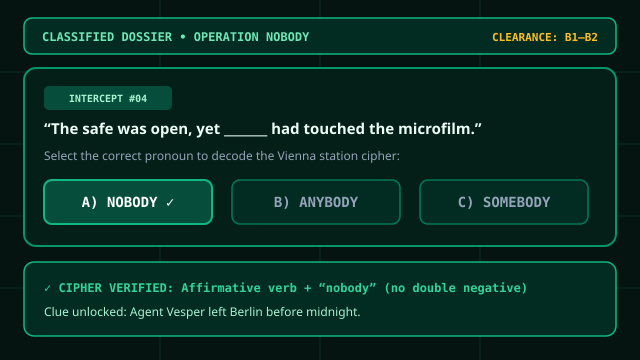
Spy dossier riddles and speed trials for indefinite pronouns with live codename entry.
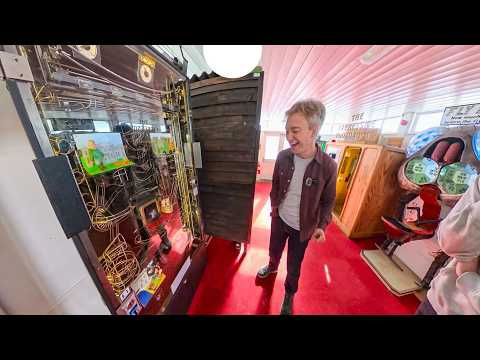
Tim Hunkin automata reading, social-critique vocabulary, and C1 sentence transformations.
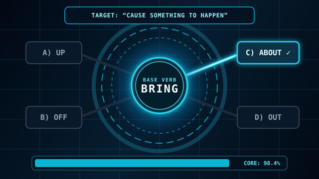
Stabilise the pressure dials by pairing high-frequency exam verbs with the exact particle under a live clock.
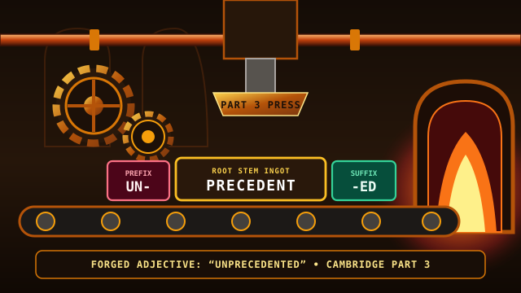
Build prefixes, suffixes, and negative stems on the factory line for Cambridge Use of English Part 3.
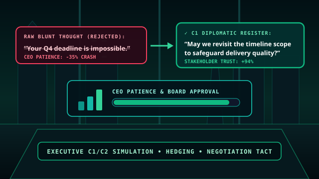
Handle blunt executive questions, refine diplomatic hedging, and hold your nerve in high-stakes meetings.
Focus the optical lens to eliminate stubborn article slips across abstract nouns, institutions, and plural generalisations.
Walk an interactive 3D brass orrery courtyard linking visual rooms to core C1/C2 syntactic anchors.
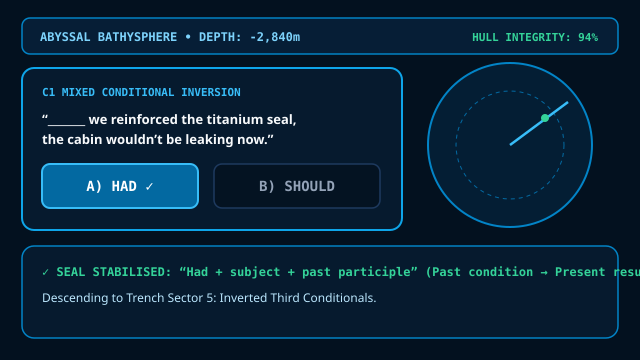
Abyssal Bathysphere, Darjeeling Signal Box, Pencil's Midnight Desk, and The Blueprint Vault.
Interactive drills build strong habits, but nothing replaces an experienced exam teacher working through your own speaking and writing. Book a 30-minute starter session and leave with an honest Band 7.5+ or C1/C2 plan.